Most storms will contain a variation of GIS datasets that can be plotted with ggplot2. The helper functions for this have the prefix ‘gis’.
All products are experimental and there maybe fluctuations particularly in current datasets.
In general, datasets are available for storms dated back to 1998. However, products such as Wind Speed Probabilities only go back to 1999.
Some datasets require the use of the storm key and an optional advisory. Other products require a datetime value and cannot be isolated by storm key or advisory. The datetime values are not based on the issue time of the advisory, but rather three hours prior. For example, if you are seeking a dataset where the forecast/advisory was issued at 9:00AM UTC, you will want the dataset for 6:00AM UTC. This will be explained a little further below.
Build a Tracking Chart
There are three functions available to help you plot GIS data; tracking_chart, al_tracking_chart and ep_tracking_chart. al_tracking_chart and ep_tracking_chart are just helpers centered on the Atlantic and northeast Pacific ocean, respectively.
args(rrricanes::tracking_chart)## function (countries = TRUE, states = TRUE, res = 110, ...)
## NULLThe countries and states parameters are TRUE by default. This means a basic call to tracking_chart will return a map with country and state borders. The res parameter is resolution; one of 110, 50 or 10 nautical miles. Resolutions 110nm and 50nm can be used immediately. To use lower resolution you must install the rnaturalearthdatahires package from ropensci:
install.packages("rnaturalearthhires",
repos = "http://packages.ropensci.org",
type = "source")tracking_chart will print a basic tracking chart (a map of the planet).
## Regions defined for each Polygons
## Regions defined for each Polygons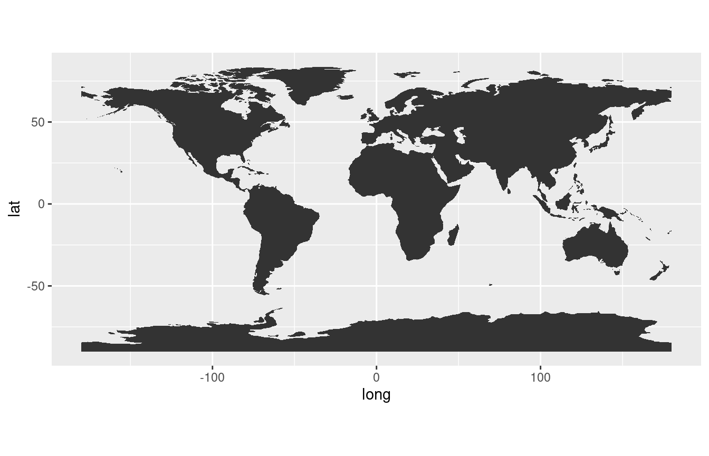
You can pass typical aes parameters to refine the color and fill of the plot; remember the tracking chart is a ggplot object.
tracking_chart(color = "black", fill = "white", size = 0.1)## Regions defined for each Polygons
## Regions defined for each Polygons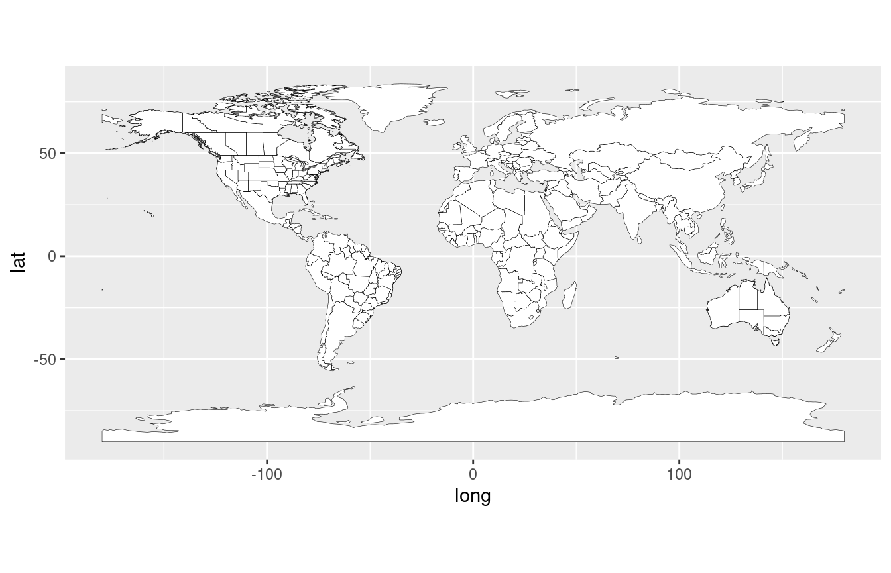
You may choose to only show coastline data instead. In this case, just set the countries parameter to FALSE.
tracking_chart(countries = FALSE, res = 50, color = "black", fill = "white",
size = 0.1)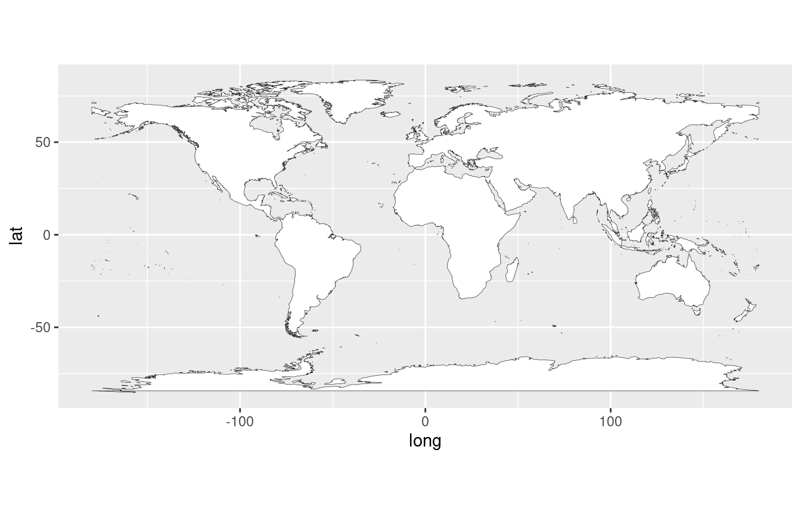
For the purposes of this vignette we’ll focus on Atlantic storms.
(p <- al_tracking_chart(color = "black",
fill = "white",
size = 0.1,
res = 50))## Regions defined for each Polygons
## Regions defined for each Polygons## Coordinate system already present. Adding new coordinate system, which will replace the existing one.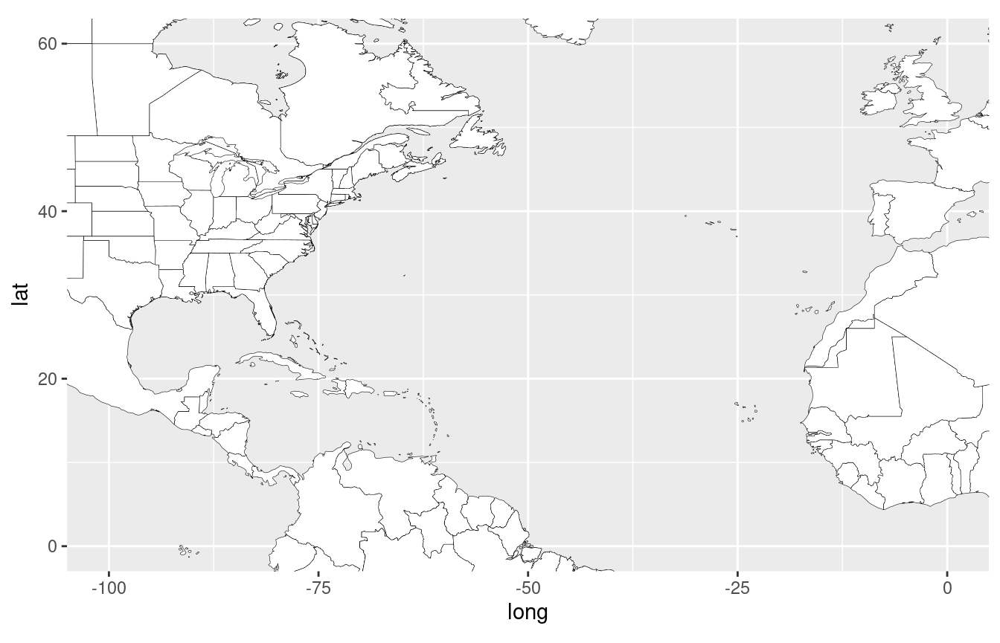
The res parameter defines the resolution of the chart presented. Options are in 110nm, 50nm and 10nm. The lower the resolution the longer the chart takes to be built.
States cannot be drawn on resolution greater than 50nm.
GIS Datasets
There are several datasets that are published for active cyclones. The following functions are designed to return the URL to those datasets:
gis_advisorygis_prob_storm_surgegis_windfieldgis_latest
Advisory Package
gis_advisory(key = "AL182012", advisory = "18")## [1] "https://www.nhc.noaa.gov/gis/forecast/archive/al182012_5day_018.zip"
df.gis_adv <- gis_advisory(key = "AL182012",
advisory = "18") %>%
gis_download()
names(df.gis_adv)## [1] "al182012.018_5day_lin" "al182012.018_5day_pgn" "al182012.018_5day_pts"
## [4] "al182012.018_ww_wwlin"For this particular storm and advisory, included are the base line, point and polygon datasets along with a dataset for watches and warnings. The objects returned are spatial dataframes contained within the list of dataframes, df.gis_adv.
Line track
str(df.gis_adv$al182012.018_5day_lin)## Formal class 'SpatialLinesDataFrame' [package "sp"] with 4 slots
## ..@ data :'data.frame': 2 obs. of 7 variables:
## .. ..$ STORMNAME: chr [1:2] "SANDY" "SANDY"
## .. ..$ STORMTYPE: chr [1:2] "HU" "HU"
## .. ..$ ADVDATE : chr [1:2] "121026/2100" "121026/2100"
## .. ..$ ADVISNUM : chr [1:2] "18" "18"
## .. ..$ STORMNUM : num [1:2] 18 18
## .. ..$ FCSTPRD : num [1:2] 72 120
## .. ..$ BASIN : chr [1:2] "al" "al"
## ..@ lines :List of 2
## .. ..$ :Formal class 'Lines' [package "sp"] with 2 slots
## .. .. .. ..@ Lines:List of 1
## .. .. .. .. ..$ :Formal class 'Line' [package "sp"] with 1 slot
## .. .. .. .. .. .. ..@ coords: num [1:6, 1:2] -77.1 -77 -76.1 -74.3 -72.6 ...
## .. .. .. ..@ ID : chr "0"
## .. ..$ :Formal class 'Lines' [package "sp"] with 2 slots
## .. .. .. ..@ Lines:List of 1
## .. .. .. .. ..$ :Formal class 'Line' [package "sp"] with 1 slot
## .. .. .. .. .. .. ..@ coords: num [1:8, 1:2] -77.1 -77 -76.1 -74.3 -72.6 ...
## .. .. .. ..@ ID : chr "1"
## ..@ bbox : num [1:2, 1:2] -77.1 27.3 -71.5 41
## .. ..- attr(*, "dimnames")=List of 2
## .. .. ..$ : chr [1:2] "x" "y"
## .. .. ..$ : chr [1:2] "min" "max"
## ..@ proj4string:Formal class 'CRS' [package "sp"] with 1 slot
## .. .. ..@ projargs: chr "+proj=longlat +a=6371200 +b=6371200 +no_defs"As we’re dealing with a SpatialLinesDataFrame which needs to be modified, you can use the helper function shp_to_df for plotting.
fcst_line <-
shp_to_df(df.gis_adv$al182012.018_5day_lin)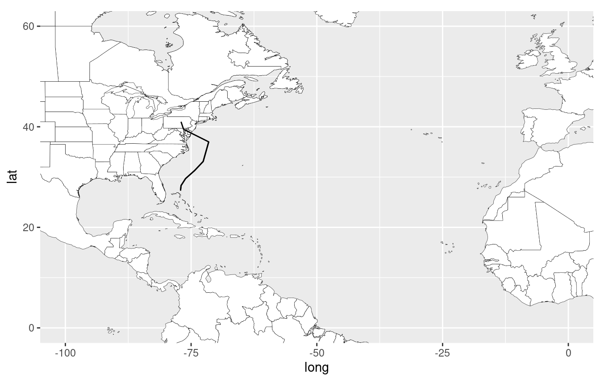
There are two groups of data in the set: one for 72-hour forecast period and one for 120-hour. Grouping by FCSTPRD will show the forecast track correctly.
There is a pretty wide field of view on the map above. You can use sp::bbox to “zoom in” on the map.
(bb <- sp::bbox(df.gis_adv$al182012.018_5day_lin))## min max
## x -77.1 -71.5
## y 27.3 41.0
(p2 <- p + geom_path(data = fcst_line, aes(long, lat, group = FCSTPRD)) +
coord_equal(xlim = c(bb[1,1] - 5, bb[1,2] + 5),
ylim = c(bb[2,1] - 5, bb[2,2] + 5)))## Coordinate system already present. Adding new coordinate system, which will replace the existing one.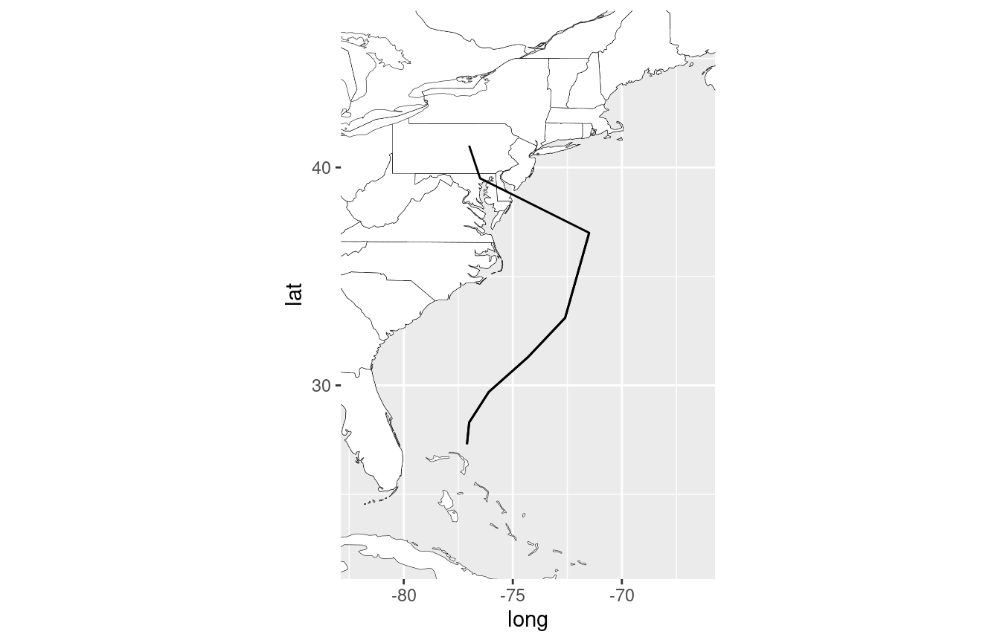
Point track
Each forecast position is also included in the points dataframe. You can access this in the df.gis_adv$al182012.018_5day_pts@data object; no conversion necessary.
(p3 <- p2 +
geom_point(data = df.gis_adv$al182012.018_5day_pts@data,
aes(LON, LAT)))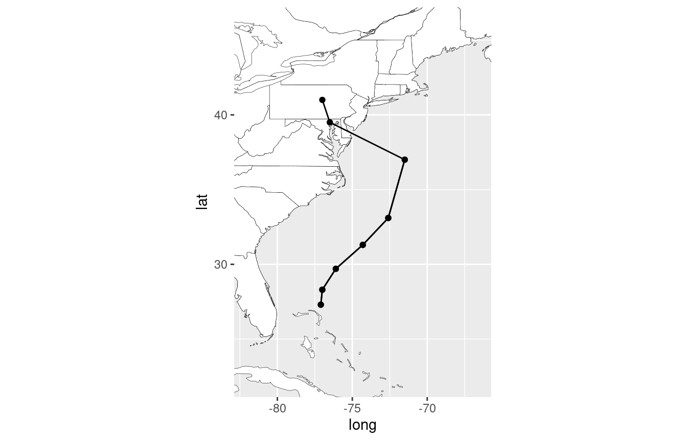
Forecast Cone
Forecast cone data is contained in the polygon dataset. To deal with this dataset you can use the shp_to_df function again or take the slightly longer way:
fcst_cone <- df.gis_adv$al182012.018_5day_pgn
fcst_cone@data$id <- rownames(fcst_cone@data)
fcst_cone.points <- broom::tidy(fcst_cone, region = "id")## Warning in showSRID(uprojargs, format = "PROJ", multiline = "NO", prefer_proj
## = prefer_proj): Discarded ellps unknown in Proj4 definition: +proj=longlat
## +R=6371200 +no_defs +type=crs## Warning in showSRID(uprojargs, format = "PROJ", multiline = "NO", prefer_proj =
## prefer_proj): Discarded datum unknown in Proj4 definition
fcst_cone <- dplyr::left_join(fcst_cone.points, fcst_cone@data, by = "id")
p3 + geom_polygon(data = fcst_cone %>% filter(FCSTPRD == 120),
aes(long, lat, group = group, fill = factor(FCSTPRD)),
alpha = 0.5) +
geom_polygon(data = fcst_cone %>% filter(FCSTPRD == 72),
aes(long, lat, group = group, fill = factor(FCSTPRD)),
alpha = 0.5)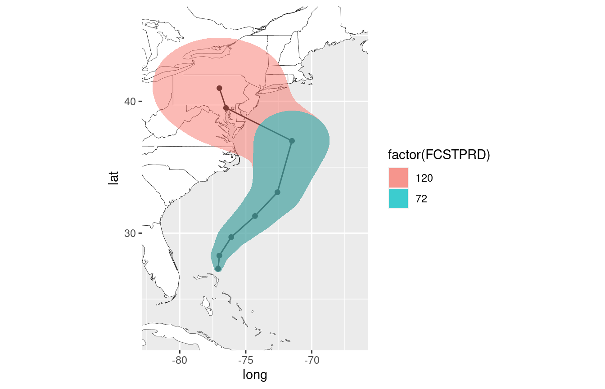
Note that in some GIS packages the forecast cones may be identical (though they shouldn’t be). I’ve noticed it with Hurricanes Ike and Matthew; it’s in the raw dataset.
Watches and Warnings
You can also plot watches and warnings if any are in effect for the package release time.
ww_line <- shp_to_df(df.gis_adv$al182012.018_ww_wwlin)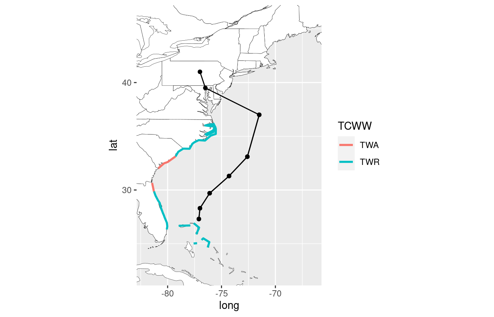
In the example above you can see tropical storm warnings issued for the Bahamas, North Carolina and portions of the South Carolina and Florida coast while tropical storm watches are in effect for northern Florida and South Carolina.
Probabilistic Storm Surge
The Tropical Cyclone Storm Surge Probabilities data shows the probability, in percent, of a specified storm surge occurring during the forecast period indicated. The product is based upon an ensemble of Sea, Lake, and Overland Surge from Hurricanes (SLOSH) model runs using the National Hurricane Center (NHC) official advisory and accounts for track, size, and intensity errors based on historical errors.
gis_prob_storm_surge(key = "AL142016",
products = list(psurge = 0),
datetime = "20161006")## [1] "https://www.nhc.noaa.gov/gis/storm_surge/al142016_psurge0_2016100600.zip"
## [2] "https://www.nhc.noaa.gov/gis/storm_surge/al142016_psurge0_2016100606.zip"
## [3] "https://www.nhc.noaa.gov/gis/storm_surge/al142016_psurge0_2016100612.zip"
## [4] "https://www.nhc.noaa.gov/gis/storm_surge/al142016_psurge0_2016100618.zip"
df.gis_storm_surge <-
gis_prob_storm_surge(key = "AL142016",
products = list(psurge = 0),
datetime = "20161006") %>%
last() %>%
gis_download()
prob_surge <- shp_to_df(df.gis_storm_surge$al142016_2016100618_gt0)## Warning in RGEOSUnaryPredFunc(spgeom, byid, "rgeos_isvalid"): Ring Self-
## intersection at or near point -81.136932369999997 25.789945599999999## Warning in RGEOSUnaryPredFunc(spgeom, byid, "rgeos_isvalid"): Ring Self-
## intersection at or near point -85.46185303 29.966722489999999## Warning in RGEOSUnaryPredFunc(spgeom, byid, "rgeos_isvalid"): Ring Self-
## intersection at or near point -81.25689697 25.743593220000001## Warning in RGEOSUnaryPredFunc(spgeom, byid, "rgeos_isvalid"): Ring Self-
## intersection at or near point -76.067649840000001 35.958679199999999## Warning in RGEOSUnaryPredFunc(spgeom, byid, "rgeos_isvalid"): Ring Self-
## intersection at or near point -81.021675110000004 25.239685059999999## Warning in RGEOSUnaryPredFunc(spgeom, byid, "rgeos_isvalid"): Ring Self-
## intersection at or near point -81.640518189999995 29.382949830000001## SpP is invalid## Warning in rgeos::gUnaryUnion(spgeom = SpP, id = IDs): Invalid objects found;
## consider using set_RGEOS_CheckValidity(2L)
bb <- sp::bbox(df.gis_storm_surge$al142016_2016100618_gt0)
p + geom_path(data = prob_surge,
aes(x = long, y = lat,
group = group,
color = PSurge00c),
size = 1, alpha = 0.5) +
coord_equal(xlim = c(bb[1,1], bb[1,2]),
ylim = c(bb[2,1], bb[2,2]))## Coordinate system already present. Adding new coordinate system, which will replace the existing one.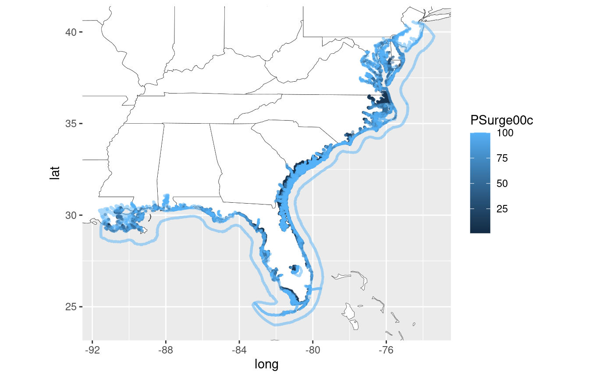
Current and Forecast Wind Field Radii
Wind radii data may also be available for some cyclone advisory packages. This is the radius to which a minimum sustained wind speed may be felt from the center of circulation.
gis_windfield("AL142016", advisory = "33")## [1] "https://www.nhc.noaa.gov/gis/forecast/archive/al142016_fcst_033.zip"
df.gis_wind_radii <- gis_windfield("AL142016", advisory = "33") %>% gis_download()
wf_init <- shp_to_df(df.gis_wind_radii$al142016_2016100606_initialradii)
bb <- sp::bbox(df.gis_wind_radii$al142016_2016100606_forecastradii)
(p4 <- p + geom_polygon(data = wf_init,
aes(x = long, y = lat, fill = factor(RADII)), alpha = 0.5) +
coord_equal(xlim = c(bb[1,1], bb[1,2]), ylim = c(bb[2,1], bb[2,2])))## Coordinate system already present. Adding new coordinate system, which will replace the existing one.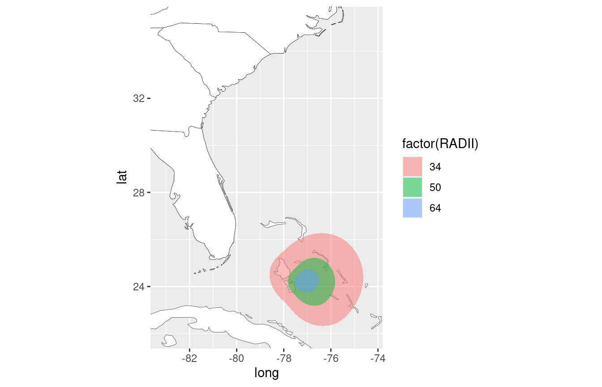
Additionally, forecast wind radii data is also generally available in some packages
wf_fcst <- shp_to_df(df.gis_wind_radii$al142016_2016100606_forecastradii)
p4 + geom_polygon(data = wf_fcst,
aes(x = long, y = lat, group = group, fill = factor(RADII)),
alpha = 0.5)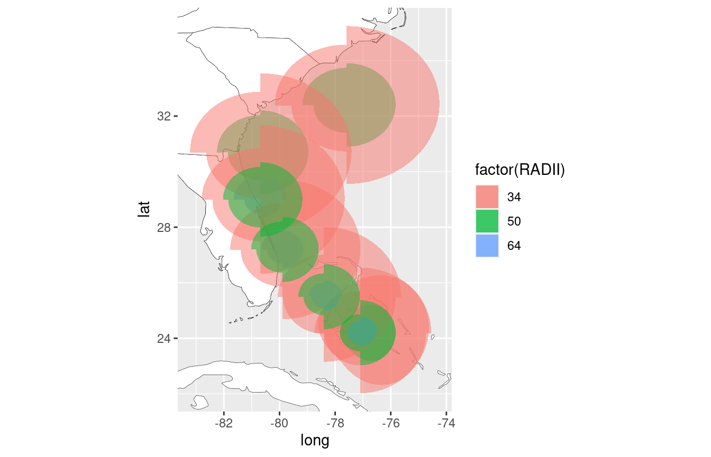
Wind Speed Probabilities
Wind Speed probabilities show the chance of experiencing a minimum-sustained winds of 34, 50 and 64 knots with a given period of time (typically, 120 hours). These products are not storm-specific but are global so other active cyclones in other basins may also appear.
gis_wsp(datetime = "2016100606", res = 0.5)## [1] "https://www.nhc.noaa.gov/gis/forecast/archive/2016100606_wsp_120hrhalfDeg.zip"
df.gis_wsp <-
gis_download(
"https://www.nhc.noaa.gov/gis/forecast/archive/2016100606_wsp_120hrhalfDeg.zip"
)Cumulative Probability for >34kt Winds
bb <- sp::bbox(df.gis_wsp$`2016100606_wsp34knt120hr_halfDeg`)
p +
geom_sf(
data = st_as_sf(df.gis_wsp$`2016100606_wsp34knt120hr_halfDeg`),
aes(color = PWIND120)
) +
coord_sf(xlim = c(bb[1,1], bb[1,2]), ylim = c(bb[2,1], bb[2,2]))Cumulative wind speed probability for >50kt winds:
bb <- sp::bbox(df.gis_wsp$`2016100606_wsp50knt120hr_halfDeg`)
p +
geom_sf(
data = st_as_sf(df.gis_wsp$`2016100606_wsp50knt120hr_halfDeg`),
aes(color = PWIND120)
) +
coord_sf(xlim = c(bb[1,1], bb[1,2]), ylim = c(bb[2,1], bb[2,2]))Cumulative probability for >64kt winds: